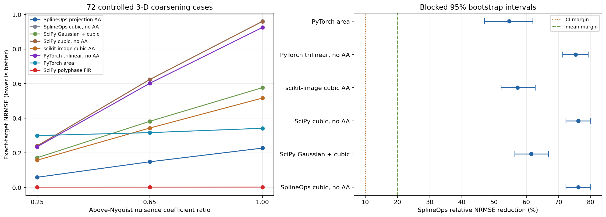

Controlled 3-D spectral-coarsening validation#
The frozen generic-resize comparison passed; broader scientific-resampling superiority did not. On smooth, mirror-compatible 3-D fields, SplineOps cubic projection had lower exact-target error than every predeclared generic N-D resize pipeline. A post-hoc polyphase FIR audit was far more accurate.
What was tested#
The source is manufactured rather than presented as real seismic or simulation data. That gives the study an analytical target: 12 resolvable cosine modes are the desired field, while 12 above-output-Nyquist modes represent content that must not alias onto the coarse grid. No library output is used as truth.
The frozen protocol specifies three isotropic and anisotropic geometries, eight fresh confirmation fields per geometry, and nuisance-to-signal coefficient ratios of 0.25, 0.65, and 1.00. This produces 72 cases. Four pilot seeds and three eight-seed blocks observed during implementation validation are excluded. The acceptance rule was unchanged before the fresh blocks were run. The protocol was frozen locally, not registered independently.
Seven pipelines were frozen before confirmation:
SplineOps cubic projection and cubic interpolation;
SciPy endpoint-aligned cubic sampling, with and without a Gaussian prefilter;
scikit-image cubic resize with Gaussian antialiasing;
PyTorch volumetric trilinear interpolation and area resize.
After the frozen result passed, a separable scipy.signal.resample_poly
pipeline was added as an explicitly post-hoc adversarial audit. It uses the
exact endpoint interval ratios and reflect padding. It cannot retroactively be
called predeclared, but it is essential to the broader conclusion.
Each endpoint or half-pixel pipeline is compared with the analytical target on its corresponding point grid. PyTorch area has regional semantics; comparing it with a point-grid target is intentional because this study concerns continuous regular-grid samples, not voxel averages.
{kind=link}

Result#
Method |
Mean NRMSE |
Passband NRMSE |
Stopband leakage |
|---|---|---|---|
SplineOps projection AA |
0.1449 |
0.0130 |
0.2270 |
SplineOps cubic, no AA |
0.6082 |
0.0007 |
0.9603 |
SciPy Gaussian + cubic |
0.3770 |
0.0921 |
0.5685 |
SciPy cubic, no AA |
0.6078 |
0.0010 |
0.9597 |
scikit-image cubic AA |
0.3392 |
0.0895 |
0.5078 |
PyTorch trilinear, no AA |
0.5872 |
0.0264 |
0.9238 |
PyTorch area |
0.3197 |
0.2970 |
0.1665 |
SciPy polyphase FIR (post-hoc) |
0.00218 |
0.00202 |
0.00103 |
The closest frozen baseline by mean NRMSE was PyTorch area. SplineOps reduced mean NRMSE by 54.7%; the blocked 95% bootstrap interval was 47.0% to 62.0%. SplineOps was better in 70 of 72 individual cases against area and all 72 cases against each other alternative. Its worst geometry-by-nuisance stratum still showed a 27.8% mean reduction against area. These values pass the predeclared 20% mean, 10% interval-bound, 90% case-win, and no-losing-stratum criteria.
The post-hoc result reverses the broader ranking. Polyphase FIR had mean NRMSE 0.00218, about 98.5% lower than SplineOps, and won all 72 cases. Consequently, SplineOps is not the most accurate scientific resampler for this field class.
Why it won—and where it does not#
Projection provided the best balance in this test. Interpolation preserved already-resolvable modes almost perfectly but leaked above-Nyquist modes. PyTorch area suppressed those modes most strongly but substantially attenuated the passband. SplineOps incurred a small passband error while rejecting enough unresolvable content to minimize the mixed-field error.
This identifies several real failure regions. If the source is already band-limited, projection is less accurate than plain cubic interpolation here. Area also beat SplineOps in two strong-nuisance individual cases. The result must not be shortened to “SplineOps always has better quality.” For this spectral task, a dedicated FIR resampler is the clear accuracy choice.
Repeated CPU timing#
With plans or equivalent coordinates prepared before timing, SplineOps took 2.5 to 2.8 ms per volume on the recorded workstation. Its geometric-mean local speedup was about 12 times over SciPy Gaussian+cubic and 13 times over scikit-image, and it was faster for all three geometries.
PyTorch trilinear took 0.42 to 0.53 ms and was much faster than SplineOps. Area was faster on one geometry and slower on two. Polyphase FIR took 34 to 53 ms; SplineOps was about 16 times faster. Runtime must not be generalized beyond the recorded single-thread CPU environment.
What can be claimed#
The evidence supports this statement:
For the tested coarsening of continuous, mirror-compatible 3-D fields with meaningful above-output-Nyquist content, SplineOps cubic projection produced lower analytical-target NRMSE than the predeclared generic SciPy, scikit-image, and PyTorch resize pipelines, while running substantially faster than the more accurate post-hoc SciPy polyphase FIR pipeline.
It does not establish the best scientific resampling accuracy, superiority on real wavefield measurements, or a downstream physical advantage. A real seismic or simulation study should add domain metrics such as phase, arrival-time, energy, or solver error.
Reproduce it#
python -m pip install -e '.[wavefield-study]'
python scripts/benchmark_wavefield3d_coarsening.py \
--output-dir benchmarks/wavefield3d
The benchmark script, raw JSON, case-level CSV, component CSV, and timing CSV publish the complete result. Timings are machine-specific.